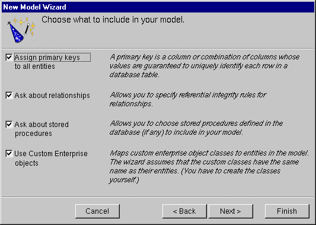
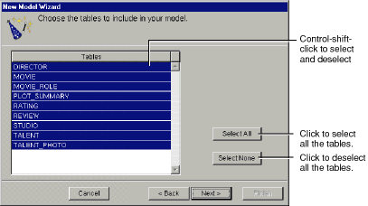

Table of Contents
Table of Contents  Previous Section
Previous Section
 New.
New.Choosing What to Include in Your Model
In this next wizard page, you can specify the degree to which the wizard configures your model.

Figure 4. Choosing What to Include in the Model
How complete the model EOModeler creates is depends on how completely the schema information is inside your database server. For example, the wizard includes relationships in your model only if the server's schema information specifies foreign key definitions.
Using the options in this page, you can tell EOModeler that you want to supplement the model with additional information. (Note that the wizard doesn't modify the underlying database.)
Assign primary keys to all entities
Enterprise Objects Framework uses primary keys to uniquely identify enterprise objects and to map them to the appropriate database row. Therefore, you must assign a primary key to each entity you use in your application. The wizard automatically assigns primary keys to the model if it finds primary key information in the database's schema information.
Checking this box causes the wizard to prompt you to choose primary keys that aren't defined in the database's schema information. If your database doesn't define them, the wizard later prompts you to choose primary keys.
Ask about relationships
If there are foreign key definitions in the database's schema information, the wizard includes the corresponding relationships in the model. However, a definition in the schema information doesn't provide enough information for the wizard to set all of a relationship's options. Checking this box causes the wizard to prompt you to provide the additional information it needs to complete the relationship configurations.
Ask about stored procedures
Checking this box causes the wizard to read stored procedures from the database's schema information, display them, and allow you to choose which to include in your model.
Use custom enterprise objects
An entity maps a table to enterprise objects by storing the name of a database table (MOVIE, for example) and the name of the corresponding enterprise object class (a Java class, Movie, for example). When deciding what class to map a table to, you have two choices: EOGenericRecord or a custom class. EOGenericRecord is a class whose instances store key-value pairs that correspond to an entity's properties and the data associated with each property.
If you don't check the "Use custom enterprise objects" box, the wizard maps all your database tables to EOGenericRecord. If you do check this box, the wizard maps all your database tables to custom classes. The wizard assumes that each entity is to be represented by a custom class with the same name. For example, a table named MOVIE has an entity named Movie, whose corresponding custom class is also named Movie.
Use a custom enterprise object class only when you need to add business logic; otherwise use EOGenericRecord.
Choosing the Tables to Include
After specifying what additional information to include in your model, the wizard prompts you to choose the tables to include in your model. By default, all the tables are selected.

Figure 5. Choosing the Tables to Include
The wizard creates entities only for the tables you select. If you later decide you want to include a table you didn't select at this stage, you can add it using the Model
 Add Stored Procedure command, as described in the chapter
Add Stored Procedure command, as described in the chapter Next Section
Next Section